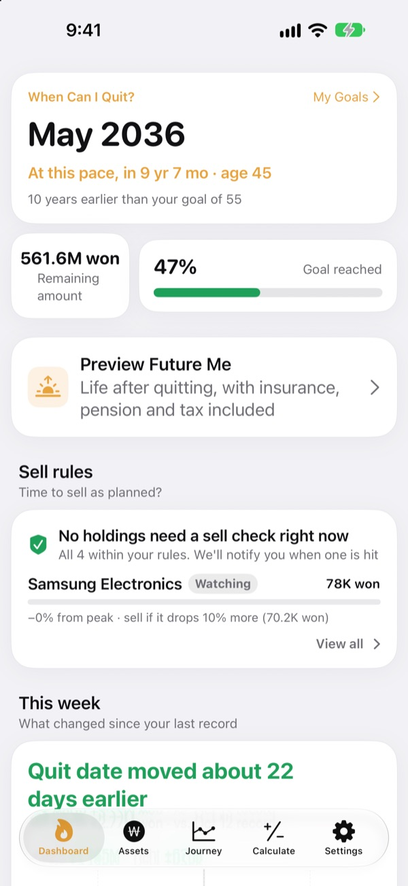
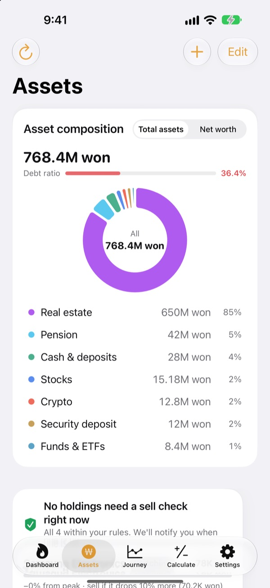
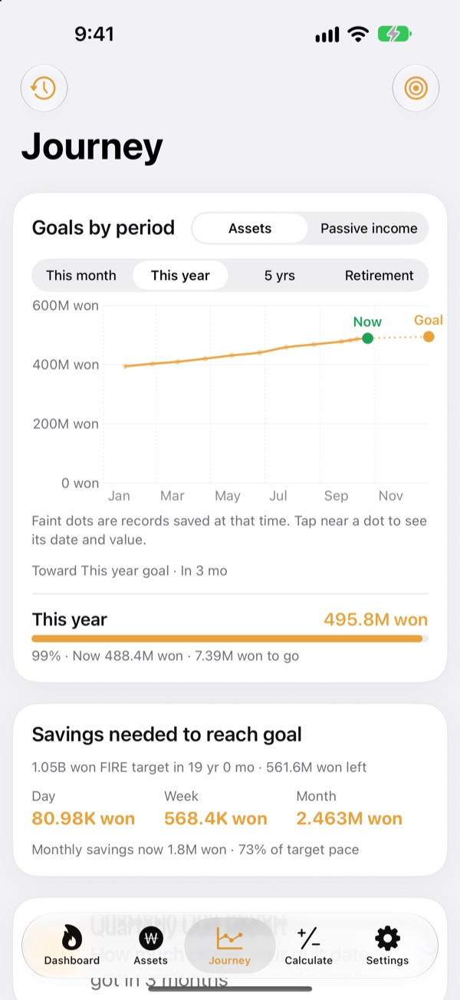
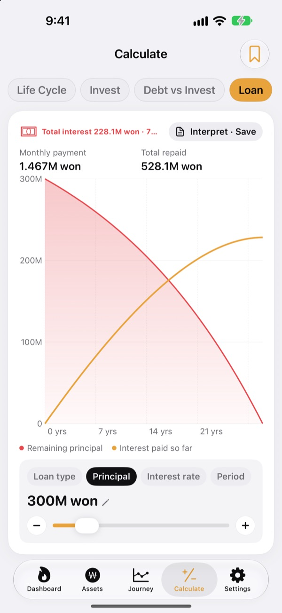

Know when you can quit.
By the numbers.
Enter what you spend and what you've saved, and you get the month you could walk away. Every time your assets change, you see whether that date moved closer or further.
No account needed. Your records stay on your device.

Find your quit date
Drag the sliders. It's the same math the app runs on its first screen.
Still running the "can I quit yet?" math in your head?
When your bank, brokerage, pension and rental deposit all live in different places, even your total gets fuzzy, so your quit date stays a guess. Toesagak pulls everything onto one screen and keeps recalculating the month you could quit from that total.
Every asset on one screen
Property, stocks, funds and ETFs, pensions, cash and deposits, rental deposits, crypto and loans, grouped by type with your total assets, net worth and debt ratio.
Stock and crypto prices are fetched to keep values current, and a screenshot of your brokerage app brings in holdings and values in one go.

How much a day gets you there
See this month, this year, five years and retirement as goals, alongside your past records, on a single chart. It also tells you how much to save per day, week or month to stay on track.
When your assets change, that week's record is saved automatically, so your history builds itself.

Run the numbers before big decisions
Calculators for your lifetime asset curve, investing, paying off debt versus investing, loans, savings and deposits, the buying power of your salary, and turning money into hours. Drag a value and the chart redraws, with the previous curve left as a dotted line to compare.
Name and save the setups you come back to.

Three steps to start
- 1
Enter your spending and age
Rough numbers are fine. Your quit date shows up right away.
- 2
Add your assets
The more you break them down, the sharper the date.
- 3
Check in now and then
Weekly records build up on their own, and it can remind you on the 1st of each month.
How the app does the math
- Target
- A year of spending after you quit ÷ safe withdrawal rate (at 4%, that's 25 years of spending)
- Quit date
- The month your net worth, plus what you save each month, grown at your expected return, reaches the target
- Total assets
- Everything you own, added up
- Net worth
- Total assets minus debts such as loans
- Progress
- Net worth ÷ target. You can also track it by passive income
- What you can change
- Monthly spending, withdrawal rate from 2 to 6%, expected return from 0 to 12%, the age you'd like to quit
Every result is a reference calculation based on your inputs and is not investment advice.
Questions
Where are my records stored?
Only on your device. There's no sign-up and nothing is sent to the developer. Turn on iCloud sync in Settings to see the same records on your iPhone and iPad through your own iCloud account.
Prices aren't updating.
US and Korean stocks, crypto and exchange rates work without any setup. Check your internet connection and that the ticker or code is correct. Apartment prices use Korea's public real estate data and need a free service key entered in Settings.
What's the difference between total assets and net worth?
Total assets is everything you own added up. Net worth is that minus debts such as loans. Your quit date is based on net worth.
How do I move my records to a new device?
Use Export in Settings to make a backup file, keep it in Files, iCloud Drive or email, then restore it on the new device. Backup files never include API keys. The app also keeps your 20 most recent backups on the device automatically.
How do sell alerts work?
For each holding, set how far it can fall from its peak or a target price. When it crosses that line, you get a heads-up. It stays quiet on the way up. Prices are checked when you open the app and when iOS allows it in the background (usually every few hours), so it isn't real-time monitoring.
Can I keep my numbers private?
Turn on App Lock in Settings to open the app with Face ID or your passcode. With the lock on, the monthly reminder doesn't show any numbers either.
Can I look around first?
Turn on Demo Data in Settings to explore every screen with a fictional person's assets. Turn it off and your own records come right back. Demo Data isn't available while iCloud sync is on.
How do I delete all my data?
Deleting the app removes every record stored on the device. If you want to keep a copy, export a backup file in Settings first.
Can I invest based on these numbers?
Toesagak's results are reference calculations based on your inputs and an assumed return. They aren't investment advice, and real outcomes depend on the market and your situation.
Bug reports, ideas or questions? Write to leeo@kakao.com.